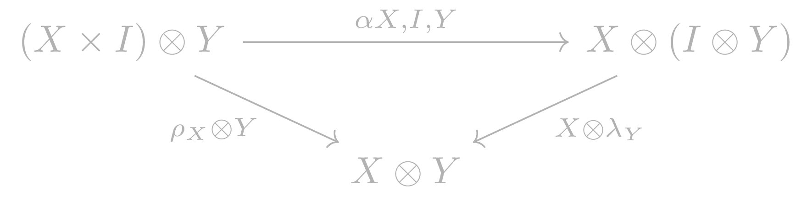
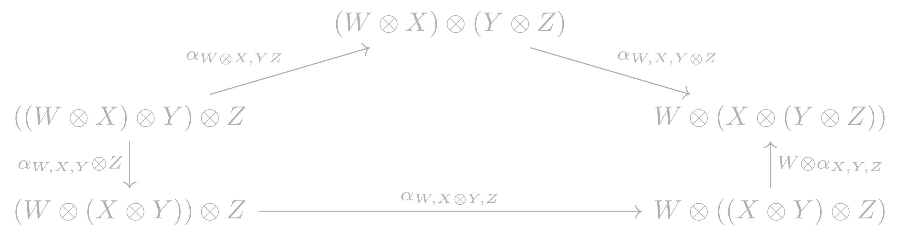

Monoidal Categories
Table of Contents
1 Definition
This is taken from Definition 1.2.1 in 2-Dimensional Categories.
A monoidal category is a tuple \((C, \otimes, I, \alpha, \lambda, \rho)\) consisting of:
- a category \(C\);
- a functor \(\otimes : C \times C \rightarrow C\) called the monoidal product;
- an object \(I \in C\) called the monoidal unit;
- a natural isomorphism \[\alpha_{X,Y,Z}:(X \otimes Y) \otimes Z \rightarrow X \otimes (Y \otimes Z)\] for all objects \(X, Y, Z \in C\) called the associativity isomorphism;
- natural isomorphisms \[\lambda_X : I \otimes X \xrightarrow{\sim} X\] \[\rho_X : X \otimes I \xrightarrow{\sim} X\]
The above data must satisfy the following axioms:
1.1 Unit axioms
The middle unity diagram

is commutative for all \(X,Y \in C\). Moreover, the equality \[\lambda_I = \rho_I : I \otimes I \rightarrow I\] holds.
1.2 Pentagon Axiom
The pentagon

is commutative for all objects \(W, X, Y, Z \in C\).
3 References
- The definition used is from Johnson and Yau's 2-Dimensional Categories.